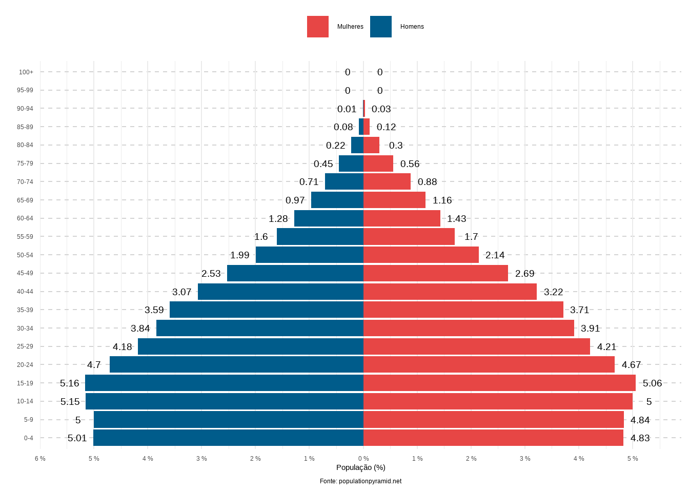
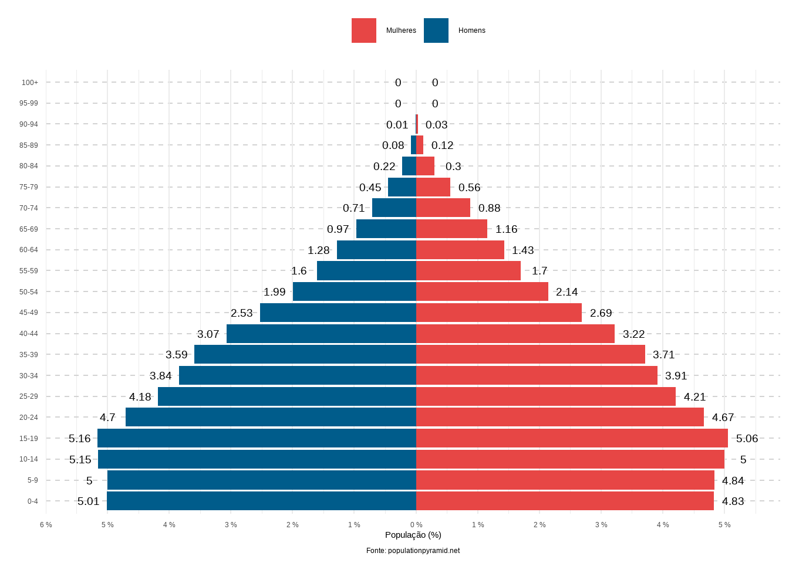
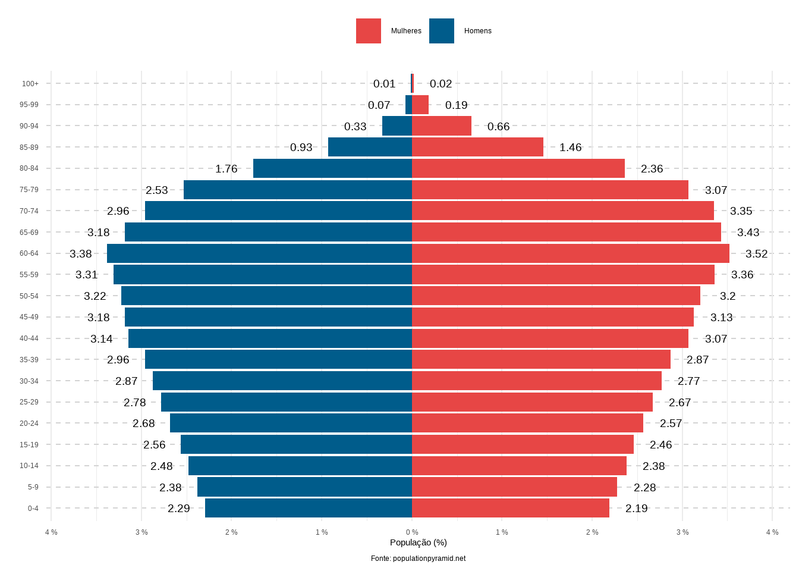

February 10, 2023
Mede a participação relativa do contingente populacional potencialmente inativo que necessitaria ser sustentado pela parcela da população potencialmente produtiva (DATASUS, 2005).
Pressupõe que os jovens (pessoas com até 14 anos) e os idosos (pessoas acima de 65 anos) de uma população são dependentes economicamente dos demais (IFI, 2019).
É a quantidade de crianças (população menor de 14 anos) e idosos (população acima de 65 anos) que existe no país para cada pessoa em idade ativa (entre 15 e 64 anos) (PITTA e STAMPE, 2020).
A Razão de Dependência pode ser decomposta em: Razão de Dependência de Jovens (RDJ) e Razão de Dependência de Idosos (RDI). A soma das duas componentes individuais fornece a Razão de Dependência Total (RDT) (IFI, 2019).
A importância da Razão de Dependência está no acompanhamento do grau de dependência econômica de uma determinada população, na sinalização do processo de rejuvenescimento ou de envelhecimento populacional de um espaço geográfico e na formulação de políticas públicas em áreas de interesse, como saúde, educação e previdência social (DATASUS, 2005).
Analisar as Razões de Dependência Demográfica brasileira desde o ano de 2000;
Projetar o grau de dependência para as próximas décadas, até 2060.
Análises estatísticas a partir da coleta de dados secundários provenientes:
e Projeções Populacionais para os próximos anos. Todos realizados pelo Instituto Brasileiro de Geografia e Estatística (IBGE).
A Razão de Dependência Total é definida como a soma da população de crianças/adolescentes e idosos (grupos etários economicamente dependentes) dividida pela população adulta (predominante no mercado de trabalho), multiplicada por 100.
\[ RDT = \dfrac{\text{número de pessoas com até 15 anos + número de pessoas com 65 anos ou mais}}{\text{número de pessoas entre 15 e 64 anos}} \times 100 \]
A Razão de Dependência de Jovens é calculada pela razão entre o número de pessoas entre 0 e 14 anos e o número de indivíduos entre 15 e 64 anos na população, multiplicada por 100.
\[ RDJ = \dfrac{\text{número de pessoas com até 15 anos}}{\text{número de pessoas entre 15 e 64 anos}} \times 100 \]
A Razão de Dependência de Idosos é obtida através da razão entre o número de pessoas com mais de 65 anos e o número de pessoas entre 15 e 64 anos de idade, multiplicada por 100.
\[ RDI = \dfrac{\text{número de pessoas com 65 anos ou mais}}{\text{número de pessoas entre 15 e 64 anos}} \times 100 \]
Valores elevados apontam que a População em Idade Ativa (PIA) deve sustentar uma maior proporção de dependentes (DATASUS, 2005).


Nenhum país do mundo ficou alheio à Transição Demográfica (ALVES, 2008).
A Transição Demográfica, geralmente, inicia com a queda das taxas de mortalidade e, depois de um certo tempo, prossegue com a queda das taxas de natalidade, provocando uma forte mudança na estrutura etária da pirâmide populacional (ALVES, 2008).
A base da pirâmide de 2060 será menor do que a base da pirâmide de 2000 e, ao mesmo tempo, o topo será maior, indicando a dimensão do processo de envelhecimento da estrutura etária brasileira.
No início há uma aceleração do crescimento vegetativo da população, depois uma desaceleração do crescimento e, por fim, pode haver estabilização ou descrescimento da população (ALVES, 2014).
É possível observar:
que a participação dos jovens vem diminuindo constantemente na população;
um aumento da população idosa em proporções cada vez maiores;
uma ampliação inical da População em Idade Ativa e, posteriormente, uma redução dessas pessoas no mercado de trabalho.
Dessa forma, há um padrão de crescimento diferenciado por idade:
baixo ou negativo, no segmento jovem;
médio ou baixo, na população em idade ativa, entre as décadas de 2030 e 2040, e negativo no restante do período;
muito alto no contingente de idosos.
Esse padrão de crescimento caracterizará a transição da estrutura etária brasileira, provocando alterações nas relações de dependência entre os três principais grupos etários (ALVES, 2008; CARVALHO e RODRÍGUEZ-WONG, 2008).
Houve uma redução da Razão de Dependência do grupo de crianças/adolescentes e um aumento na razão de dependência de idosos. A razão de dependência total apresentou queda entre os anos de 2000 a 2020, com o aumento relativo da população em idade ativa em relação à população total, promovendo, assim, uma possibilidade de crescimento econômico impulsionado pelo Bônus Demográfico (PEREIMA e PORSSE, 2013); entretanto, segundo as projeções, a RD voltará a aumentar após 2030, devido a diminuição da PEA e indicando o fim do Bônus Demográfico.
As projeções do IBGE indicam que a Razão de Dependência dos Jovens (RDJ) irá diminuir, o que implica que a Razão de Dependência dos Idosos (RDI) irá aumentar numa taxa ainda maior (PITTA e STAMPE, 2020).
O principal componente da redução da carga de dependência foi a redução da Razão de Dependência do grupo das crianças/adolescentes que vem apresentando um declínio continuado em decorrência da queda da fecundidade. Essa redução foi tão significativa que contrabalançou o aumento da carga de dependência dos idosos. Somente após 2030 que a Razão de Dependência dos Idosos (RDI) superará a Razão de Dependência dos Jovens (RDJ) e fará a Razão de Dependência Total (RDT) aumentar (ALVES, 2008).
A Razão de Dependência Total (RDT) começará a crescer a partir da década de 2020, impulsionada pelo maior crescimento da Razão de Dependência dos Idosos (RDI) (IFI, 2019). Esta mudança não será homogênea entre as diferentes regiões do país (PITTA e STAMPE, 2020).
Também chamado de Janela de Oportunidade, corresponde à menor carga de dependência (ALVES, 2008).
Segundo Alves (2008), é definido da seguinte forma:
o Bônus começa quando a porcentagem da População em Idade Ativa (entre 15 a 64 anos) é igual ou maior que a porcentagem da Razão de Dependência;
o Bônus termina quando a porcentagem da População em Idade Ativa Ativa (entre 15 a 64 anos) é igual ou menor que a porcentagem da Razão de Dependência.
O crescimento econômico é impulsionado pelo Bônus Demográfico, quando a população em idade de trabalho (15 a 64 anos) cresce em proporção à população jovem (menores de 15 anos) e idosa (maiores de 65 anos) (PEREIMA e PORSSE, 2013).
No Brasil, o Bônus Demográfico está próximo ao fim (IFI, 2019).
A Razão de Dependência indica a parcela de uma população dependente suportada pela população potencialmente produtiva (em idade de trabalhar).
A Razão de Dependência Total é definida como a soma da população de crianças/adolescentes e idosos (grupos etários economicamente dependentes) dividida pela população adulta (predominante no mercado de trabalho), multiplicada por 100.
A base da pirâmide no futuro será menor do que a base que havia no passado, e o topo será maior, indicando a dimensão do processo de envelhecimento da estrutura etária brasileira.
Enquanto a participação dos jovens vem diminuindo na população, ocorre um aumento da população idosa em proporções cada vez maiores.
A alteração no padrão de crescimento populacional provocará mudanças nas relações de dependência dos três principais grupos etários.
Houve uma redução da Razão de Dependência dos Jovens e um aumento na Razão de Dependência dos Idosos. Esse aumento fará a Razão de Dependência Total crescer a partir da década de 2020.
Esses fatos são de grande importância, uma vez que afetam diretamente o mercado de trabalho e impõem desafios na promoção dos níveis de produtividade do trabalho para a manutenção do crescimento econômico com meios sustentáveis (IFI, 2019; PEREIMA e PORSSE, 2013). Ainda, é necessário definir e implantar políticas públicas de maneira que as oportunidades possam ser criadas e aproveitadas no enfrentamento dos desafios gerados pelo novo padrão demográfico (CARVALHO e RODRÍGUEZ-WONG, 2008).
Slides por Luísa Gisele Böck, feito com Quarto. Código disponível no GitHub.